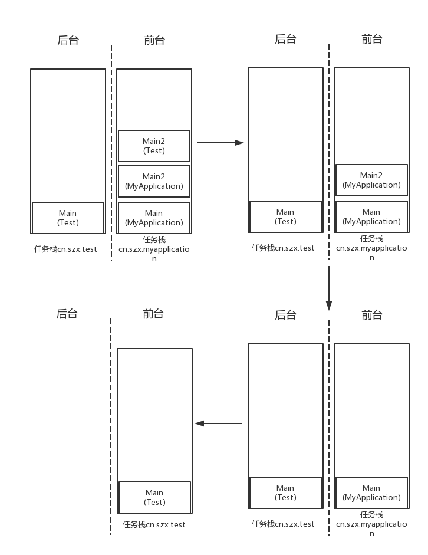

Activity的启动模式（二）
这里就是做了一个关于启动模式的小实验，实验代码可以在此处下载：http://download.csdn.net/detail/al4fun/9882278
实验过程如下：
第一个app：MyApplication
|
|
点击MainActivity中的TextView就会打开Main2Activity。两个activity均为标准启动模式。
第二个app：Test
|
|
点击MainActivity中的TextView就会打开Main2Activity。MainActivity为标准启动模式；Main2Activity为singleTask启动模式，并且taskAffinity为第一个app的应用包名。
启动实验
- 打开MyApplication(MainActivity被启动)，点击其中的TextView打开MyApplication的Main2Activity
- 点击home键回到桌面
- 打开Test（MainActivity被启动），点击其中的TextView打开Test的Main2Activity
启动实验结果分析
此时使用adb shell dumpsys activity查看任务栈的情况如下：
|
|
可见，最近启动过4个activity，它们分别存在于两个任务栈中：
TaskRecord{be21152 #125 A=cn.szx.test U=0 sz=1}TaskRecord{2d0c1dd #124 A=cn.szx.myapplication U=0 sz=3}
MyApplication的两个Activity和Test的Main2Activity位于任务栈cn.szx.myapplication中，而Test的MainActivity位于任务栈cn.szx.test中。
启动过程分析：
- 打开MyApplication(MainActivity被启动)：创建默认的任务栈cn.szx.myapplication，并将MainActivity入栈。
- 点击其中的TextView打开MyApplication的Main2Activity：将Main2Activity入栈到任务栈cn.szx.myapplication中。
- 点击home键回到桌面：将任务栈cn.szx.myapplication转入后台。
- 打开Test（MainActivity被启动）：创建默认的任务栈cn.szx.test，并将MainActivity入栈。
- 点击其中的TextView打开Test的Main2Activity：检查发现Main2Activity的启动模式为singleTask且其taskAffinity为cn.szx.myapplication，于是在android系统中查找是否存在名为cn.szx.myapplication任务栈，发现已存在任务栈cn.szx.myapplication，于是将其转到前台，并将Main2Activity入栈。
虽然Test的Main2Activity位于任务栈cn.szx.myapplication中，但它仍然是属于Test的（运行demo你会发现其标题栏上显示的是Test，而不是MyApplication）。
关闭实验
在完成上面的启动实验的基础上，当我们连续点击返回键即逐个关闭activity时，会依次看到如下页面：
- 初始状态显示的是Test的Main2Activity， -> 点击返回键 ->
- 显示MyApplication的Main2Activity， -> 点击返回键 ->
- 显示MyApplication的MainActivity， -> 点击返回键 ->
- 显示Test的MainActivity， -> 点击返回键 ->
- 显示桌面
关闭实验结果分析
